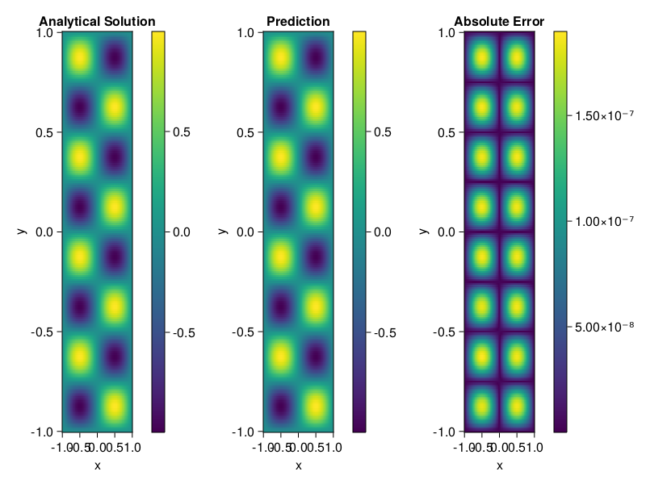

Helmholtz equation
Let us consider the Helmholtz equation in two space dimensions
\[\begin{aligned} &\Delta u(x, y)+k^{2} u(x, y)=q(x, y), \quad(x, y) \in \Omega:=(-1,1)^2 \\ &u(x, y)=0, \quad(x, y) \in \partial \Omega \end{aligned}\]
where
\[q(x, y)=-\left(a_{1} \pi\right)^{2} \sin \left(a_{1} \pi x\right) \sin \left(a_{2} \pi y\right)-\left(a_{2} \pi\right)^{2} \sin \left(a_{1} \pi x\right) \sin \left(a_{2} \pi y\right)+k^{2} \sin \left(a_{1} \pi x\right) \sin \left(a_{2} \pi y\right).\]
The excat solution is $u(x,y)=\sin{a_1\pi x}\sin{a_2\pi y}$. We chose $k=1, a_1 = 1$ and $a_2 = 4$.
using ModelingToolkit, IntervalSets, Sophon, Lux
using Optimization, OptimizationOptimJL
@parameters x,y
@variables u(..)
Dxx = Differential(x)^2
Dyy = Differential(y)^2
a1 = 1
a2 = 4
k = 1
q(x,y) = -(a1*π)^2 * sin(a1*π*x) * sin(a2*π*y) - (a2*π)^2 * sin(a1*π*x) * sin(a2*π*y) + k^2 * sin(a1*π*x) * sin(a2*π*y)
eq = Dxx(u(x,y)) + Dyy(u(x,y)) + k^2 * u(x,y) ~ q(x,y)
domains = [x ∈ Interval(-1,1), y ∈ Interval(-1,1)]
bcs = [u(-1,y) ~ 0, u(1,y) ~ 0, u(x, -1) ~ 0, u(x, 1) ~ 0]
@named helmholtz = PDESystem(eq, bcs, domains, [x,y], [u(x,y)])\[ \begin{align} \frac{\mathrm{d}}{\mathrm{d}y} \frac{\mathrm{d}}{\mathrm{d}y} u\left( x, y \right) + \frac{\mathrm{d}}{\mathrm{d}x} \frac{\mathrm{d}}{\mathrm{d}x} u\left( x, y \right) + u\left( x, y \right) =& - 166.78 \sin\left( 3.1416 x \right) \sin\left( 12.566 y \right) \end{align} \]
Note that the boundary conditions are compatible with periocity, which allows us to apply BACON.
chain = BACON(2, 1, 5, 2; hidden_dims = 32, num_layers=5)
pinn = PINN(chain) # call `gpu` on it if you want to use gpu
sampler = QuasiRandomSampler(300, 100)
strategy = NonAdaptiveTraining()
prob = Sophon.discretize(helmholtz, pinn, sampler, strategy)
@time res = Optimization.solve(prob, BFGS(); maxiters=1000)u: ComponentVector{Float64}(filters = (filter_1 = (bias = [-0.06240587184336822; -0.25705058043071; … ; -0.14926408490842796; -1.0883397795924856;;]), filter_2 = (bias = [-0.04039766055559924; -0.09718053220459384; … ; -0.8505310337291814; 0.13885681073907555;;]), filter_3 = (bias = [0.4797903412821074; 0.38335083061240677; … ; 0.07521718181905193; -1.1355100228598622;;]), filter_4 = (bias = [0.9502384448565324; 0.7963762709524712; … ; -0.09811669442126583; -0.7242008927199597;;]), filter_5 = (bias = [-0.7090098385969585; 0.300431230953891; … ; 0.6967457852043942; -0.38005523203408004;;])), linear_layers = (layer_1 = (weight = [-0.3862844925038489 0.31003812095713584 … 0.4089917689539147 0.3236420745357824; -0.5081391118921771 -0.03694821884617466 … -0.4740476534974203 0.0008262135316811085; … ; 0.5355265293527348 0.19158833375445983 … 0.1135589253312951 -0.2519240347002778; 0.12966528768762486 -0.3598735604591878 … -0.20281635743932847 -0.20445272649583854], bias = [0.0779536708589106; -0.09296572787425811; … ; -0.003860891107379891; -0.06067375368334106;;]), layer_2 = (weight = [-0.17725159002795804 0.13698098373032785 … -0.19279006522703285 -0.2980878384532534; 0.2597576131676995 -0.02156631393033988 … -0.1778816561462852 0.3620259839905099; … ; 0.28898051419210785 0.11199355634186797 … 0.055590864039665046 0.13456533020570957; -0.3070739448230467 0.1950327585511829 … -0.3647882567586119 0.10570930297640699], bias = [0.044068661092693646; -0.009591107880770295; … ; -0.008876065343894724; 0.07412640734198338;;]), layer_3 = (weight = [0.31193029411975126 -0.02716369435828187 … -0.15909442157070977 0.22820721065568444; -0.35192876259400546 -0.3471075644042786 … -0.20993020029052883 0.3949956498422191; … ; 0.1310351116342696 0.22900698785428586 … -0.00896101080266221 0.21027869458110898; -0.17454752154892522 0.32820013571450957 … 0.40272618994692944 0.2413879849117932], bias = [-0.03685427649230187; 0.005195566441058677; … ; 0.0038156679434513414; 0.009466051366444073;;]), layer_4 = (weight = [0.012015186581146727 -0.39462866220616377 … -0.07654668940781927 -0.3865876503222678; -0.09162810238446861 -0.26733608673642834 … 0.16406727556614656 0.10357999448324012; … ; -0.05552995797015114 0.18241707665270024 … -0.24322937146976814 0.0785178389907977; -0.2930801769300056 0.04118052985317949 … -0.0005584324868687608 0.13948303098785486], bias = [0.011850322806785062; -0.00248518087938224; … ; -0.02771015759935314; 0.0020774824396502752;;])), output_layer = (weight = [-0.17490395053605834 -0.25116230304325354 … 0.039702557916747726 -0.09545719320268356], bias = [0.01266880083084417;;]))Let's plot the result.
phi = pinn.phi
xs, ys= [infimum(d.domain):0.01:supremum(d.domain) for d in domains]
u_analytic(x,y) = sinpi(a1*x)*sinpi(a2*y)
u_real = [u_analytic(x,y) for x in xs, y in ys]
phi_cpu = cpu(phi) # in case you are using GPU
ps_cpu = cpu(res.u)
u_pred = [sum(phi_cpu(([x,y]), ps_cpu)) for x in xs, y in ys]
using CairoMakie
axis = (xlabel="x", ylabel="y", title="Analytical Solution")
fig, ax1, hm1 = heatmap(xs, ys, u_real, axis=axis)
Colorbar(fig[:, end+1], hm1)
ax2, hm2= heatmap(fig[1, end+1], xs, ys, u_pred, axis= merge(axis, (;title = "Prediction")))
Colorbar(fig[:, end+1], hm2)
ax3, hm3 = heatmap(fig[1, end+1], xs, ys, abs.(u_pred-u_real), axis= merge(axis, (;title = "Absolute Error")))
Colorbar(fig[:, end+1], hm3)
fig